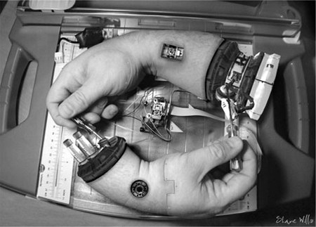
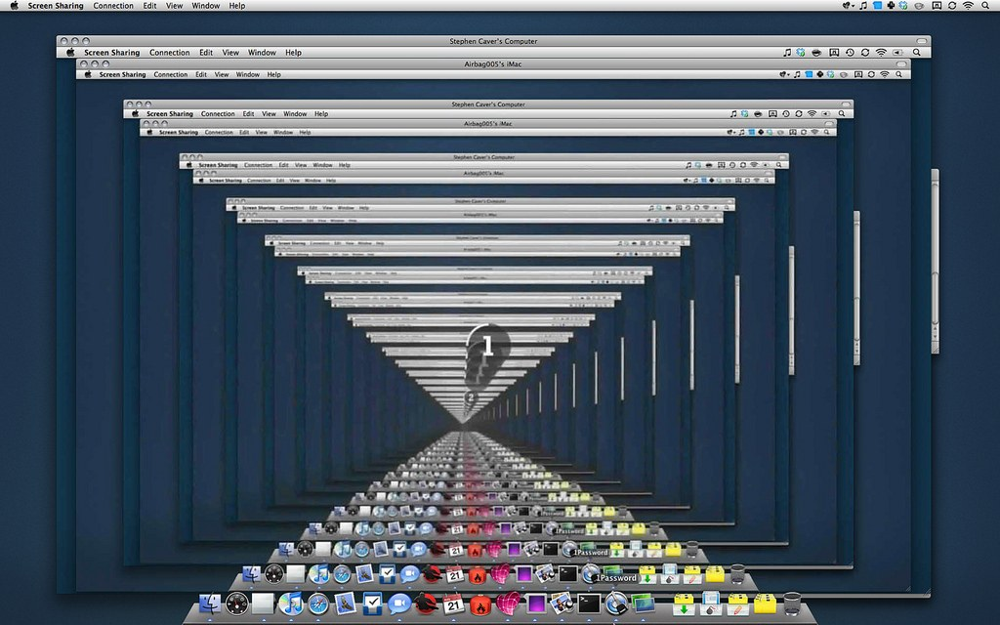

15% Outside Close Reading
15% Presentation of Outside Reading
10% Outside Literary Events
10% Discussion Board
10% Mid-Term Exam
20% Final Paper (see paper guidelines on website)
20% Preparation, Participation, and Attendance
15% Outside Close Reading
Choose one article/chapter by a theorist on the website list. You must have your article approved by the fourth week of class to receive full credit for this assignment. You are to become a master of this text. You have three one page assignments related to this text (each worth 5% of your grade).
Summarize the overall argument and the component chapters.
Contextualize this article/chapter within the career of the author or the field in which the author is writing.
Give a critique of the article/chapter that uses the logic of the book.
15% Presentation of Outside Reading
All students will introduce their reading selection to class. Presentations will include any necessary background of the author or historical context in which they wrote. You will finish by setting up pro and con arguments for the book and engaging your fellow students in discussion and/or debate. Outside Reading Presentations (ORPs) will happen on Thursdays.
10% Outside Literary Events
Since learning takes place beyond the confines of the classroom as well as within it, and since it is valuable to practice your critical skills in contexts beyond our assigned readings, 10% of your grade this semester will be associated with your attendance at approved talks about literature that are given by various speakers. You will attend 5 such talks on campus, you will write a brief report (one page) for each one (2%). The reports will consist of an opening paragraph in which you summarize the talk; a second paragraph in which you identify the critical or theoretical assumptions the speaker seems to be using; the final paragraph will be your assessment of whether or not the rubber meets the road and the theory meets, helps to understand the cultural material. These reports are due no later than one week after the talks you attend. Unless you have a documented conflict, the talks you should attend are those in the Department of Comparative Literature's weekly speaker series, Comparative Literature Luncheon on 12:20-1:20 on Mondays. Details will be provided on the website, and you can choose any 5 of these talks; or, for 5% extra credit apiece, you can attend and write a report on 6 or 7. However, if you present documentation that you have a conflict on Mondays at that time, you can suggest alternative on-campus talks on literature for approval, or, you can watch recordings of the Comp Lit talks on a C-NET website instead of being there in person.
10% Discussion Board
Students are expected to participate in an electronic newsgroup (bulletin board), discussing their thoughts on the readings and class discussions. Topics and the manner of the discussion will be decided by DISCUSSION LEADERS. Each and every student will take a turn being a discussion leader. You will have free rein here to discuss topics that do not get raised in class or in the readings. This is a chance to find out what your classmates think about your ideas. It is also a chance for those who are less talkative in class to recover some points for participation.
A given week's discussion leaders must write and send at least two paragraphs (10 sentences) by FRIDAY at midnight. They should be sure to quote from the following week’s readings and cite the film.
DISCUSSANTS (that is, everyone else) must write at least one response by the following MONDAY, at midnight. Responses may be any length five sentences or over. They can respond to any one or all of the discussion leaders for a given week.
All students must SIGN UP for a week to be a DISCUSSION LEADER by the third week of class.
10% Mid-Term Exam
There will be one mid-term exam testing your factual knowledge and synthetic understanding. The exam will be comprised of in-class and take-home assignments.
20% Preparation, Participation, and Attendance
Students are expected to attend all class meetings.
Students are expected to complete all of the reading for the week in time for class.
If a student has extenuating circumstances regarding either of these requirements, that student should contact me immediately.
In order to receive credit for attendance, you must not only be present in class, but also bring marked copies of the readings to class and be prepared to give your opinions on the reading. You must also bring any written material assigned for that class meeting.
In order to receive credit for in-class discussion, you must email me a self-assessment report. Every month students must email me a self-evaluation report assessing their own in-class performance. The self-assessment should include the words “self-assessment” in the subject header and a letter grade of A, B, C, D, or F. Due dates are posted on the schedule.
Course Objectives
Understanding role of theory in contemporary criticism.
Understanding the basics of contemporary theories.
Understanding the fundamental forms of literary comparison.
Acquiring proficiency with the language of theory.
Gaining insight into uses and abuses of theory.
Forming the basis of critical thinking about interpretation.
Synthesizing your own interpretive schemata.
Understanding the stakes of using particular jargon and avoiding others.
Thinking comparatively, critically, theoretically.
Understanding the history and geography of ideas and writings now thought of as theory.
Reading closely for argument
Gain a sense of the variety, breadth and depth of contemporary literary critique.
Requirements

INFO
COURSECMLIT 400Y
location230 Theatre
TIMET,TH 2:30-3:45P
PROFJonathan Abel; professor.abel-at-psu.edu
OFFICE HOURST,TH 10-12pm or by appointment


Required Texts
Jonathan Culler, Literary Theory: A Very Short Introduction (New York: Oxford University Press, 1997)=Culler
Norton Anthology of Theory and Criticism 2nd Ed., ed. Leitch (New York: Norton, 2010)=(T&C)
John Fowles, The Collector (Boston: Little and Brown, 1997)=Fowles
Books available at the bookstore and other fine and notso fine locations.

Senior Seminar in
Literary Criticism and Theory - Requirements